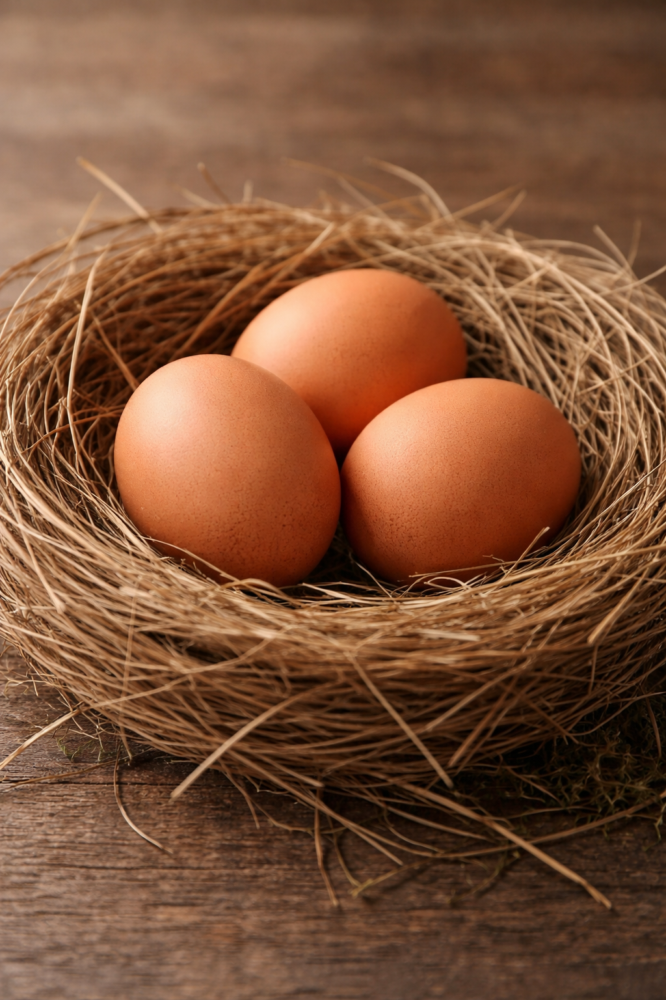
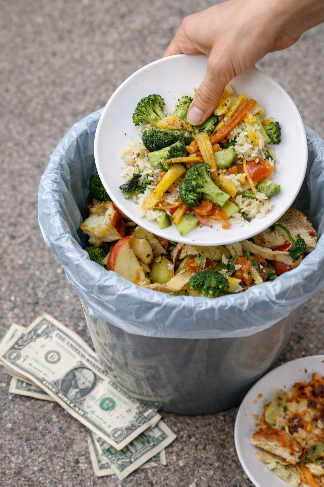
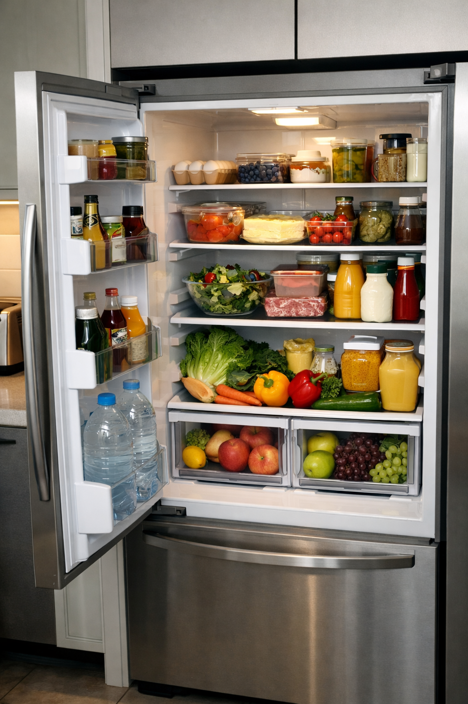

Fresh 서비스와 식품 관리에 대한 정보를 제공합니다.
냉장고 음식 유통기한 정리 방법
냉장고를 열어보면 언제 샀는지 기억나지 않는 식품들이 생각보다 많습니다.
우유, 두부, 계란, 반찬, 소스 등 다양한 식재료가 들어 있다 보니
유통기한을 일일이 기억하는 것은 쉽지 않습니다.
그래서 많은 가정에서 냉장고 정리를 할 때 가장 많이 하는 말이
“이거 아직 먹어도 되는 거야?”라는 질문입니다.
음식 유통기한을 제대로 관리하지 못하면 두 가지 문제가 생깁니다.
하나는 아직 먹을 수 있는 음식을 버리게 되는 낭비이고,
다른 하나는 이미 상한 음식을 먹게 되는 위생 문제입니다.
특히 냉장고에 오래 보관된 음식은 눈으로 봐서는 상태를 판단하기 어렵기 때문에
더 주의가 필요합니다.
가장 간단한 유통기한 관리 방법은 식품을 구입한 날짜를 기준으로 정리하는 것입니다.
예를 들어 냉장고 안에서 오래된 식품이 앞쪽에 오도록 배치하면 자연스럽게 먼저 소비하게 됩니다.
또 냉장고 문 쪽에는 유통기한이 짧은 식품을 두고,
냉동실에는 장기 보관 식품을 넣는 방식도 효과적인 방법입니다.
최근에는 음식 유통기한을 관리하는 웹서비스나 앱을 이용하는 사람들도 늘어나고 있습니다.
식품을 등록해 두면 유통기한을 자동으로 정리해 주기 때문에
냉장고 안에 어떤 음식이 있는지 한눈에 확인할 수 있습니다.
음식 낭비를 줄이고 식재료를 효율적으로 사용하려면 무엇보다
정기적인 냉장고 정리 습관이 중요합니다.
일주일에 한 번 정도 냉장고를 점검하는 것만으로도 음식 관리가 훨씬 쉬워집니다.
우유 유통기한 실제 기준

우유는 냉장고에서 가장 자주 소비되는 식품 중 하나입니다.
하지만 많은 사람들이 우유 유통기한에 대해 정확하게 알고 있지 않습니다.
유통기한이 하루만 지나도 바로 버려야 한다고 생각하는 경우도 있고,
반대로 너무 오래 보관하다가 상한 우유를 마시는 경우도 있습니다.
우유의 유통기한은 기본적으로 제품이 판매될 수 있는 기간을 의미합니다.
즉, 유통기한이 지났다고 해서 바로 마실 수 없는 것은 아닙니다.
다만 유통기한 이후에는 품질이 점점 떨어질 수 있기 때문에
보관 상태에 따라 섭취 여부를 판단해야 합니다.
일반적으로 냉장 보관된 우유는 유통기한이 지난 후에도
약 3~5일 정도는 섭취 가능한 경우가 많습니다.
물론 이는 냉장 온도가 잘 유지되고,
개봉 후 오래 지나지 않은 경우에 해당합니다.
이미 개봉한 우유는 공기와 접촉하면서 세균이 증식할 수 있기 때문에
가능한 빨리 마시는 것이 좋습니다.
우유가 상했는지 확인하려면 몇 가지 방법이 있습니다.
먼저 냄새를 맡아보았을 때 신 냄새가 난다면 섭취하지 않는 것이 좋습니다.
또 우유를 컵에 따라 보았을 때 덩어리가 생기거나 색이 변했다면
상했을 가능성이 높습니다.
우유를 오래 신선하게 보관하려면 냉장고 문 쪽이 아니라
냉장고 안쪽 깊은 곳에 보관하는 것이 좋습니다.
냉장고 문은 온도 변화가 가장 큰 위치이기 때문입니다.
계란 보관 기간

계란은 거의 모든 가정의 냉장고에 항상 들어 있는 식품입니다.
하지만 계란의 정확한 보관 기간을 알고 있는 사람은 많지 않습니다.
계란은 비교적 보관 기간이 긴 식품이지만,
잘못 보관하면 신선도가 빠르게 떨어질 수 있습니다.
일반적으로 계란의 권장 보관 기간은 구입 후 약 3주에서 4주 정도입니다.
냉장 보관을 기준으로 했을 때 이 정도 기간 동안은 비교적 안전하게 섭취할 수 있습니다.
다만 여름철에는 냉장 보관이 제대로 이루어지지 않으면
신선도가 빨리 떨어질 수 있습니다.
계란이 신선한지 확인하는 간단한 방법도 있습니다.
물이 담긴 컵에 계란을 넣었을 때 바닥에 가라앉으면 신선한 상태이고,
물 위로 떠오르면 오래된 계란일 가능성이 높습니다.
이는 계란 내부의 공기층이 커지면서 생기는 현상입니다.
계란을 보관할 때는 냉장고 문 쪽에 있는 계란 보관 칸보다는
냉장고 안쪽 선반에 보관하는 것이 더 좋습니다.
냉장고 문은 열고 닫을 때마다 온도가 변하기 때문에
신선도 유지에 불리할 수 있습니다.
또 계란은 구입 후 바로 씻지 않는 것이 좋습니다.
계란 껍질에는 보호막이 있기 때문에
물로 씻으면 오히려 세균 침투 가능성이 높아질 수 있습니다.
음식 버리는 비용 계산

많은 사람들이 음식이 상해서 버리는 것을 단순한 낭비라고 생각하지만,
실제로는 꽤 큰 경제적 손실이 될 수 있습니다.
냉장고 안에서 유통기한이 지나 버려지는 음식들을 계산해 보면
생각보다 많은 돈이 사라지고 있다는 것을 알 수 있습니다.
예를 들어 우유 한 팩이 3000원,
계란 한 판이 7000원,
두부 한 모가 2000원이라고 가정해 보겠습니다.
만약 이런 식품들이 매달 몇 번씩 버려진다면
한 달에 만 원 이상이 음식 낭비로 사라질 수 있습니다.
작은 금액처럼 보이지만 1년으로 계산하면 상당한 비용이 됩니다.
특히 1인 가구나 맞벌이 가정에서는 식품 소비 패턴이 일정하지 않기 때문에
냉장고 안에서 음식이 방치되는 경우가 많습니다.
결국 필요 이상으로 식품을 구매하고,
사용하지 못한 채 버리는 일이 반복됩니다.
음식 낭비를 줄이기 위해서는 먼저 냉장고 안에 어떤 식품이 있는지
파악하는 것이 중요합니다.
많은 사람들이 냉장고 안에 무엇이 있는지 정확히 알지 못한 채
장을 보러 가기 때문에 같은 식품을 중복 구매하기도 합니다.
그래서 최근에는 냉장고 식품을 기록하고 관리하는 방식이 주목받고 있습니다.
식품을 등록해 두면 어떤 음식이 있는지 확인할 수 있고,
유통기한이 가까운 식품을 먼저 소비할 수 있기 때문입니다.
냉장고 정리 팁

냉장고는 매일 사용하는 공간이지만
의외로 정리가 잘 되지 않는 곳 중 하나입니다.
시간이 지나면서 음식이 쌓이고,
어떤 식품이 들어 있는지 기억하지 못하는 경우도 많습니다.
그래서 냉장고 정리를 주기적으로 하는 것이 중요합니다.
냉장고 정리를 할 때 가장 먼저 해야 할 일은
유통기한이 지난 식품을 확인하는 것입니다.
오래된 반찬이나 소스, 사용하지 않는 식재료가
냉장고 안에서 공간만 차지하는 경우가 많습니다.
이런 식품을 먼저 정리하면 냉장고 공간이 훨씬 넓어집니다.
두 번째 방법은 식품을 종류별로 나누는 것입니다.
예를 들어 채소, 육류, 유제품, 반찬처럼
카테고리를 나누어 보관하면
냉장고 안이 훨씬 정돈되어 보입니다.
또 필요한 식품을 찾기도 쉬워집니다.
세 번째는 투명 보관 용기나 정리 박스를 활용하는 방법입니다.
냉장고 안에서 식품이 뒤섞이는 것을 막아주기 때문에
정리가 훨씬 편해집니다.
마지막으로 중요한 것은 정기적인 점검입니다.
일주일에 한 번 정도 냉장고 안을 확인하면
음식이 오래 방치되는 일을 줄일 수 있습니다.
작은 습관이지만 이런 관리만으로도
냉장고를 훨씬 효율적으로 사용할 수 있습니다.